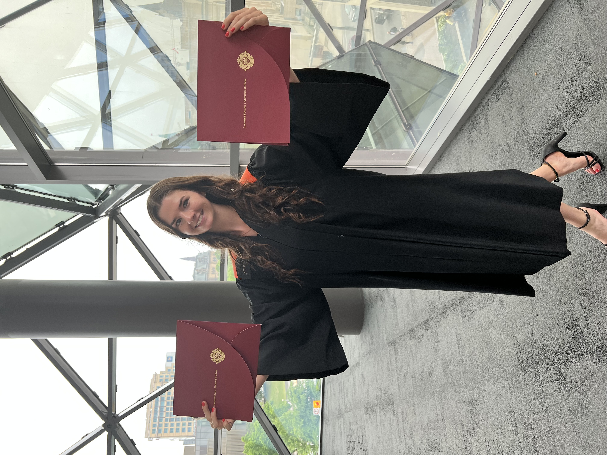

Hi, I'm Marissa Dillon! Welcome to my personal website!

I'm a recent engineering graduate from the University of Ottawa. I completed a double bachelors degree in biomedical mechanical
engineering and computing technology. The reason I wanted to pursue this degree was I wanted to combine technology with health care to
help people in need. I would be interested in any position that helps me achieve this goal. Anything from working as a biomedical engineer in a hospital setting to
developing medical devices for a company, sign me up! I'm just itching to learn and to dive right into another challenge!
I built this website for multiple reasons: I wanted to showcase a bit of my personality because
I believe I am much more than just my two-page resume. I also wanted to provide extra details regarding some of the projects and volunteering
experience I have done. Since graduating, I have a bunch of spare time on my hands and I wanted to spend some of it learning a new skill!
Please watch this introduction video to know a bit more about me!
Get to know me!
Since graduating from university and recently settling into a new full-time job, I have a lot of newfound free time to dive into my biggest
passions and explore new hobbies. Here are a few of my favourite things to do in my spare time.
Photography
Photography is my favourite art form. I absolutely love to get outside and take the time to explore the beauty of the people
and the nature around me. I love macro photography, which is basically taking close up pictures of things. I even started a photography
instagram page so I could share my pictures with my family and friends. Here are a few of my favourite pictures that I have taken
in recent years.
Animals
Animals, more specifically animal rights and animal care, have been a huge passion of mine since I can remember. I begged my parents for
a dog and after many years, they finally caved into my biggest request (add "perserverant" to my list of strong suits :) ).
I have since been the owner of a beautiful 12 year old Australian Shepherd named Clover. I took care of her training and her physical
and mental stimulation. She's extremely smart (even too smart sometimes) and makes me laugh everyday. Here are some cute pictures of her for your
enjoyment.
I do have a lot of other experience with dogs that are not my own. I used to be a Canine Enrichment Volunteer at the Ottawa Humane Society.
I was responsible for walking the dogs and providing them with mental and physical stimulation. I was also a dog walker during summer 2023
before I started looking for a full time job and it was an absolute blast. Here are some pictures of the dogs I came into
contact with when I was a volunteer at the shelter and when I was walking dogs.
Hiking and Backpacking
I recently started getting into hiking and backpacking. Over the summer, I went on my first backpacking trip in St-Donat, Quebec, which
was just under 40km long, and lasted two nights in the woods. Everything from spotting bear tracks to hearing animals run around the tent at night
was amazing and very grounding. I'm excited to see what new hiking trips I get to go on this summer!
Reading
I have been an avid reader since high school. However, since starting University, this hobby quickly fell through the tracks and I wasn't reading
as much as I wanted to due to my hectic schedule. Once I graduated, I quickly picked this back up and have found some really good books that I would love
to share. My most recent favourites and current reads are:
Resume
These are my accomplishments.
Professional Experience
| Environment and Climate Change Canada |
Gatineau, QC
October 2023 - Present |
Junior Project Engineer
- Read and comprehend research papers related to Heavy-Duty Vehicle Engine Greenhouse Gas Emissions regulations, safety and related topics
- Ensured data accuracy, consistency and relevance through meticulous data collection and validation techniques
- Wrote python scripts to automate data processing tasks
| Nordion Inc. |
Kanata, ON
May 2022 - August 2022 |
Quality Assurance Student
- Spearheaded the initiative to reduce the backlog of change forms, enhancing efficiency and effictiveness in managing process improvements
- Engaged in comprehensive research and analysis of ISO 9001, applying acquired knowledge to enhance quality assurance processes
- Reviewed existing document procedures to identify inconsistencies in documentation, developed new procedures
| Environment and Climate Change Canada |
Gatineau, QC
September 2021 - December 2021 |
Engineering Student
- Contributed to the creation and enhancement of systems used for compiling and analyzing data, ensuring their reliability and performance
- Collaborated with cross-functional teams to support the development of information systems and the successful management of data analysis projects
- Processed and eliminated the backlog of importation declarations
| Aeponyx Inc. |
Montreal, QC
January 2021 - December 2021 |
Test and Characterization Intern
- Nominated as intern of the year
- Elevated my object-oriented programming skills using Python
- Automated data analysis and optical tests by developing Python scripts, enhancing efficiency and precision in testing procedures
- Gained hands-on experience in setting up, conducting and debugging a wide range of optical and telecommunication tests, such as the eye diagram and short-term spectral analysis
Other work experience
| TeachItRight & Independant. |
Ottawa, ON & Virtual
2015 - Present |
Private Tutor
- Taught youth subjects related to STEM, online and in-person
- Communicated technical concepts in a non-technical manner
- Oversaw and developed personalized educational plans for students
| BWD |
Ottawa, ON
May 2023 - September 2023 |
Dog Walker
- Provided dogs with safe and engaging physical activities and mental stimulation tailored to their individual needs
- Delivered a top-tier customer service experience by maintaing clear and open communication with pet owners
| Calypso Theme Waterpark |
Limoges, ON
April 2018 - August 2019 |
Team Leader of the Information Department
- Communicated and helped customers, either in person, by email or over the phone
- Trained new employees in order to encourage teamwork and build trust between team members
- Managed customer complaints and solved any problems brought up to the information department
| McDonald's Canada |
Casselman, ON
April 2016 - August 2017 |
Guest Experience Leader, Cashier, Crew Trainer
- Acquired leadership skills while training new employees and offering great customer service
- Assisted cusomters with any issues they may have encountered
Skills
Volunteering
| Canadian Association for Girls in Science |
Ottawa, ON & Virtual
October 2023 - Present |
Volunteer
- Brainstorm, organize and plan STEM events for members
- Help with activities and supervise events
- Assist in running virtual activities at virtual sessions
| Ottawa Humane Society |
Ottawa, ON
July 2022 - July 2023 |
Canine Enrichment Volunteer
- Walk and provide physical enrichment and mental stimulation to the dogs staying at the shelter
- Encouraged basic obedience and follow behaviour modification plan instructions for each dog
| Heart in Hand Rescue |
Montreal, QC
January 2021 - June 2021 |
Foster home for cats:
- Provided a nurturing and temporary living environment for stray cats
- Administered medications and monitored their health
- Prepared them for a successful adoption
Adoption coordinator:
- Managed the adoption process from application review to final placement
- Ensured the best match between cats and potential adopters
- Conducted torough interviews and answered questions from potential adopters
| PAWS |
Ottawa, ON
June 2015 - April 2019 |
Junior Ambassador:
- Promoted the mission of banning the sale of pets in pet stores in Ottawa through outreach, education and community engagement
- Collaborated with other volunteers to plan and organize events
- Presented in front of the Ottawa counsellors on Monday, march 2021 2016 to get them to pass a bill to ban the sale of pets in pet stores
Here are my biggest projects and accomplishments.
I have completed a lot of projects throughout my academic journey and in my personal life that I am proud of. Below are projects varying from
IoT designs to animal rights events. I also have a new IoT project that I am completing in my spare time, so keep an eye out on my website
for an update soon!
Capstone
IoT Soil Moisture Sensor
IoT Obstacle-Avoiding Chariot
Banning the Sale of Pets in Pet Stores with PAWS
Report on Animal Homelessness (French)